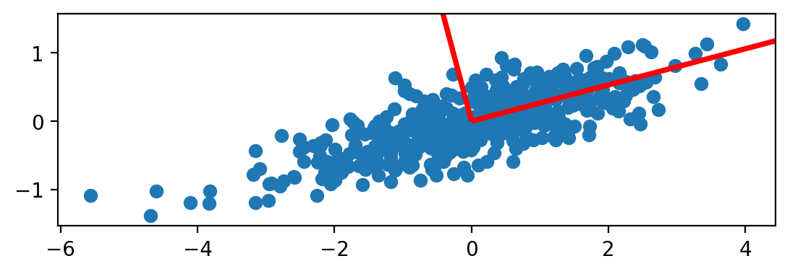
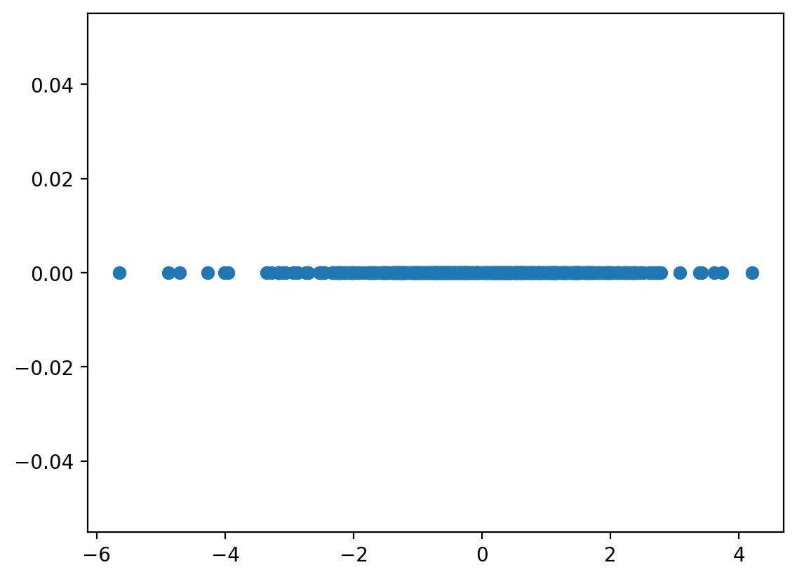
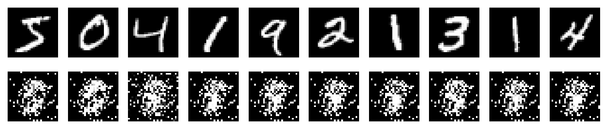
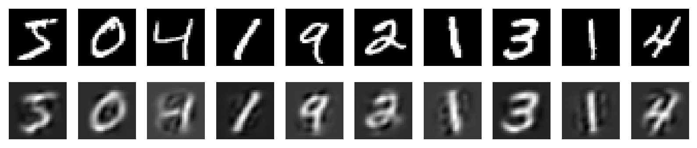
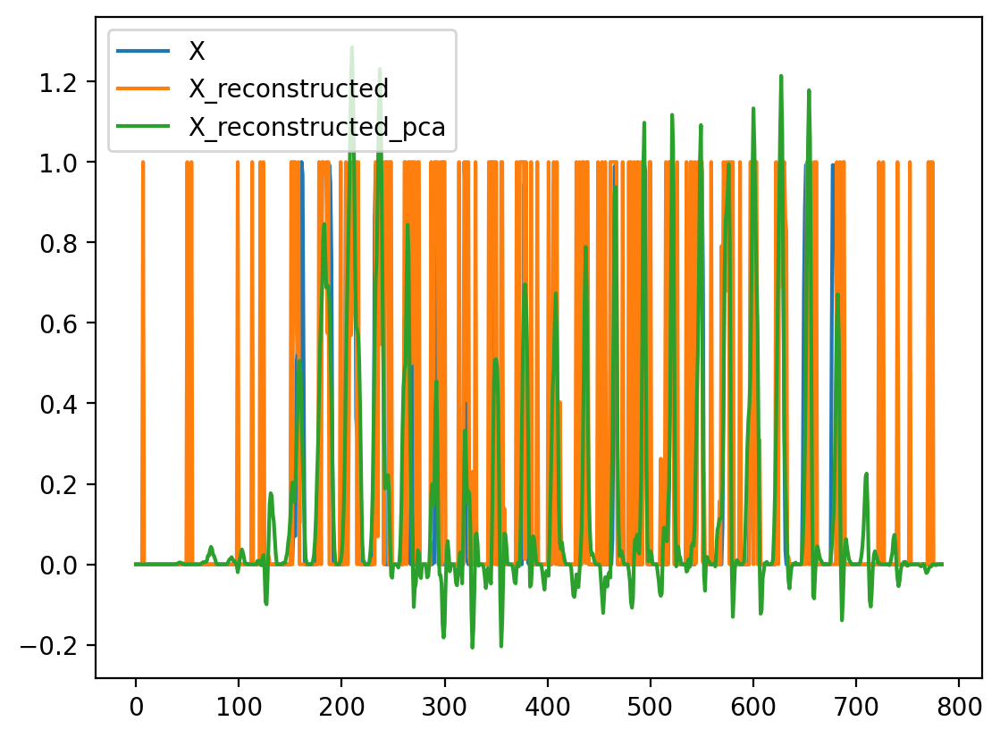

import numpy as np
import matplotlib.pyplot as plt
import torch
import torch.nn as nn
import torch.optim as optim
%matplotlib inline
# Retina
%config InlineBackend.figure_format = 'retina'PCA
ML
N = 500
D = 2
torch.manual_seed(1)
X = torch.distributions.MultivariateNormal(torch.zeros(D), torch.tensor([[2.0, 0.5], [0.5, 0.2]])).sample((N,))
X = X - X.mean(dim=0)
plt.scatter(X[:,0], X[:,1])
plt.gca().set_aspect('equal', adjustable='box')
covariance_matrix = torch.matmul(X.t(), X) / (X.size(0)-1)
covariance_matrix.shapetorch.Size([2, 2])covariance_matrixtensor([[1.9740, 0.5022],
[0.5022, 0.2127]])eigenvalues, eigenvectors = torch.linalg.eig(covariance_matrix)eigenvalues = eigenvalues.real
eigenvaluestensor([2.1071, 0.0796])eigenvectors = eigenvectors.real
eigenvectorstensor([[ 0.9666, -0.2562],
[ 0.2562, 0.9666]])# Plot the eigenvectors along with length of eigenvalues
plt.scatter(X[:,0], X[:,1])
plt.gca().set_aspect('equal', adjustable='box')
plt.quiver(0, 0, eigenvectors[0, 0], eigenvectors[1, 0], scale=eigenvalues[0].sqrt().item(), color='red', label='Eigenvector 1')
plt.quiver(0, 0, eigenvectors[0, 1], eigenvectors[1, 1], scale=eigenvalues[1].sqrt().item(), color='green', label='Eigenvector 2')
plt.legend()
k = 1
Z = torch.matmul(X, eigenvectors[:, :k])
Z.shapetorch.Size([500, 1])plt.plot(Z, torch.zeros_like(Z), 'o')
# Step 4: Sort eigenvectors based on eigenvalues
sorted_indices = torch.argsort(eigenvalues[:, 0], descending=True)
sorted_eigenvectors = eigenvectors[:, sorted_indices]--------------------------------------------------------------------------- IndexError Traceback (most recent call last) Cell In[93], line 2 1 # Step 4: Sort eigenvectors based on eigenvalues ----> 2 sorted_indices = torch.argsort(eigenvalues[:, 0], descending=True) 3 sorted_eigenvectors = eigenvectors[:, sorted_indices] IndexError: too many indices for tensor of dimension 1
sortedX.mean(dim=0), X.var(dim=0)(tensor([-5.7220e-09, 0.0000e+00]), tensor([1.9740, 0.2127]))k = 1 # Number of principal components
B = nn.Parameter(torch.randn(D, k))B.shape, X.shape(torch.Size([2, 1]), torch.Size([500, 2]))mse_loss = nn.MSELoss()
optimizer = optim.Adam([B], lr=0.001)
num_epochs = 2000 # Number of optimization epochs
for epoch in range(num_epochs):
optimizer.zero_grad()
# Project data onto the current projection matrix
z = torch.matmul(X, B)
x_reconstructed = torch.matmul(z, B.t())
# Compute reconstruction loss
loss = mse_loss(x_reconstructed, X)
# Perform backpropagation and optimization step
loss.backward()
optimizer.step()
if (epoch + 1) % 100 == 0:
print(f'Epoch [{epoch + 1}/{num_epochs}], Loss: {loss.item()}')Epoch [100/2000], Loss: 0.7209210395812988
Epoch [200/2000], Loss: 0.6048457026481628
Epoch [300/2000], Loss: 0.5128658413887024
Epoch [400/2000], Loss: 0.42206627130508423
Epoch [500/2000], Loss: 0.3365266025066376
Epoch [600/2000], Loss: 0.26167812943458557
Epoch [700/2000], Loss: 0.2000642865896225
Epoch [800/2000], Loss: 0.1518339067697525
Epoch [900/2000], Loss: 0.11567910760641098
Epoch [1000/2000], Loss: 0.08960824459791183
Epoch [1100/2000], Loss: 0.07147730886936188
Epoch [1200/2000], Loss: 0.059300925582647324
Epoch [1300/2000], Loss: 0.0514017716050148
Epoch [1400/2000], Loss: 0.0464538112282753
Epoch [1500/2000], Loss: 0.04346401244401932
Epoch [1600/2000], Loss: 0.04172360897064209
Epoch [1700/2000], Loss: 0.0407492071390152
Epoch [1800/2000], Loss: 0.040225498378276825
Epoch [1900/2000], Loss: 0.03995582088828087
Epoch [2000/2000], Loss: 0.039823081344366074# Project data onto the learned projection matrix
Z = torch.matmul(X, B)BParameter containing:
tensor([[-0.9645],
[-0.2663]], requires_grad=True)def train_linear_autoencoder(X, K=2, lr=0.001, num_epochs=2000):
D = X.size(1)
B = nn.Parameter(torch.randn(D, K))
mse_loss = nn.MSELoss()
optimizer = optim.Adam([B], lr=lr)
num_epochs = num_epochs
for epoch in range(num_epochs):
optimizer.zero_grad()
z = torch.matmul(X, B)
x_reconstructed = torch.sigmoid(torch.matmul(z, B.t()))
loss = mse_loss(x_reconstructed, X)
loss.backward()
optimizer.step()
if (epoch + 1) % 100 == 0:
print(f'Epoch [{epoch + 1}/{num_epochs}], Loss: {loss.item()}')
return B# Get MNIST data
from torchvision import datasets
from torchvision.transforms import ToTensor
mnist_train = datasets.MNIST(root='~/.datasets', train=True, transform=ToTensor(), download=True)X = mnist_train.data.float()
X = X.view(X.size(0), -1)
X = X / 255.0
X.shapetorch.Size([60000, 784])# Work with first 1000 samples
X = X[:3000]X.min(), X.max()(tensor(0.), tensor(1.))# Plot the first 10 images
fig, ax = plt.subplots(1, 10, figsize=(10, 1))
for i in range(10):
ax[i].imshow(X[i].view(28, 28).numpy(), cmap='gray')
ax[i].axis('off')B = train_linear_autoencoder(X, K=5, lr=0.001, num_epochs=2000)Epoch [100/2000], Loss: 0.4135352075099945
Epoch [200/2000], Loss: 0.3644017279148102
Epoch [300/2000], Loss: 0.3089104890823364
Epoch [400/2000], Loss: 0.26013466715812683
Epoch [500/2000], Loss: 0.22550225257873535
Epoch [600/2000], Loss: 0.20584215223789215
Epoch [700/2000], Loss: 0.19726672768592834
Epoch [800/2000], Loss: 0.1943318247795105
Epoch [900/2000], Loss: 0.1914585679769516
Epoch [1000/2000], Loss: 0.18916504085063934
Epoch [1100/2000], Loss: 0.18805715441703796
Epoch [1200/2000], Loss: 0.18697765469551086
Epoch [1300/2000], Loss: 0.18595127761363983
Epoch [1400/2000], Loss: 0.18386924266815186
Epoch [1500/2000], Loss: 0.1826687455177307
Epoch [1600/2000], Loss: 0.18168936669826508
Epoch [1700/2000], Loss: 0.18077248334884644
Epoch [1800/2000], Loss: 0.17985987663269043
Epoch [1900/2000], Loss: 0.17898057401180267
Epoch [2000/2000], Loss: 0.17811761796474457B.shapetorch.Size([784, 5])# Project data onto the 2d space
with torch.no_grad():
Z = torch.matmul(X, B)
X_reconstructed = torch.sigmoid(torch.matmul(Z, B.t()))
# Plot the first 10 images and their reconstructions
fig, ax = plt.subplots(2, 10, figsize=(10, 2))
for i in range(10):
ax[0, i].imshow(X[i].view(28, 28).numpy(), cmap='gray')
ax[0, i].axis('off')
ax[1, i].imshow(X_reconstructed[i].view(28, 28).numpy(), cmap='gray')
ax[1, i].axis('off')
from sklearn.decomposition import PCA
pca = PCA(n_components=32)
Z_pca = pca.fit_transform(X.numpy())
X_reconstructed_pca = pca.inverse_transform(Z_pca)
# Plot the first 10 images and their reconstructions
fig, ax = plt.subplots(2, 10, figsize=(10, 2))
for i in range(10):
ax[0, i].imshow(X[i].view(28, 28).numpy(), cmap='gray')
ax[0, i].axis('off')
ax[1, i].imshow(X_reconstructed_pca[i].reshape(28, 28), cmap='gray')
ax[1, i].axis('off')
import pandas as pd
df = pd.DataFrame({"X": X[0], "X_reconstructed": X_reconstructed[0], "X_reconstructed_pca": X_reconstructed_pca[0]})df.plot()
# Plot the original data and the projected data
plt.figure(figsize=(6, 6))
plt.scatter(X[:,0], X[:,1], label='Original data')
plt.scatter(Z[:,0], Z[:,0], label='Projected data')--------------------------------------------------------------------------- RuntimeError Traceback (most recent call last) Cell In[25], line 4 2 plt.figure(figsize=(6, 6)) 3 plt.scatter(X[:,0], X[:,1], label='Original data') ----> 4 plt.scatter(Z[:,0], Z[:,0], label='Projected data') File ~/miniconda3/lib/python3.9/site-packages/matplotlib/pyplot.py:3684, in scatter(x, y, s, c, marker, cmap, norm, vmin, vmax, alpha, linewidths, edgecolors, plotnonfinite, data, **kwargs) 3665 @_copy_docstring_and_deprecators(Axes.scatter) 3666 def scatter( 3667 x: float | ArrayLike, (...) 3682 **kwargs, 3683 ) -> PathCollection: -> 3684 __ret = gca().scatter( 3685 x, 3686 y, 3687 s=s, 3688 c=c, 3689 marker=marker, 3690 cmap=cmap, 3691 norm=norm, 3692 vmin=vmin, 3693 vmax=vmax, 3694 alpha=alpha, 3695 linewidths=linewidths, 3696 edgecolors=edgecolors, 3697 plotnonfinite=plotnonfinite, 3698 **({"data": data} if data is not None else {}), 3699 **kwargs, 3700 ) 3701 sci(__ret) 3702 return __ret File ~/miniconda3/lib/python3.9/site-packages/matplotlib/__init__.py:1465, in _preprocess_data.<locals>.inner(ax, data, *args, **kwargs) 1462 @functools.wraps(func) 1463 def inner(ax, *args, data=None, **kwargs): 1464 if data is None: -> 1465 return func(ax, *map(sanitize_sequence, args), **kwargs) 1467 bound = new_sig.bind(ax, *args, **kwargs) 1468 auto_label = (bound.arguments.get(label_namer) 1469 or bound.kwargs.get(label_namer)) File ~/miniconda3/lib/python3.9/site-packages/matplotlib/axes/_axes.py:4649, in Axes.scatter(self, x, y, s, c, marker, cmap, norm, vmin, vmax, alpha, linewidths, edgecolors, plotnonfinite, **kwargs) 4646 x, y = self._process_unit_info([("x", x), ("y", y)], kwargs) 4647 # np.ma.ravel yields an ndarray, not a masked array, 4648 # unless its argument is a masked array. -> 4649 x = np.ma.ravel(x) 4650 y = np.ma.ravel(y) 4651 if x.size != y.size: File ~/miniconda3/lib/python3.9/site-packages/numpy/ma/core.py:6773, in _frommethod.__call__(self, a, *args, **params) 6770 args = list(args) 6771 a, args[0] = args[0], a -> 6773 marr = asanyarray(a) 6774 method_name = self.__name__ 6775 method = getattr(type(marr), method_name, None) File ~/miniconda3/lib/python3.9/site-packages/numpy/ma/core.py:8005, in asanyarray(a, dtype) 8003 if isinstance(a, MaskedArray) and (dtype is None or dtype == a.dtype): 8004 return a -> 8005 return masked_array(a, dtype=dtype, copy=False, keep_mask=True, subok=True) File ~/miniconda3/lib/python3.9/site-packages/numpy/ma/core.py:2826, in MaskedArray.__new__(cls, data, mask, dtype, copy, subok, ndmin, fill_value, keep_mask, hard_mask, shrink, order) 2817 """ 2818 Create a new masked array from scratch. 2819 (...) 2823 2824 """ 2825 # Process data. -> 2826 _data = np.array(data, dtype=dtype, copy=copy, 2827 order=order, subok=True, ndmin=ndmin) 2828 _baseclass = getattr(data, '_baseclass', type(_data)) 2829 # Check that we're not erasing the mask. File ~/miniconda3/lib/python3.9/site-packages/torch/_tensor.py:1030, in Tensor.__array__(self, dtype) 1028 return handle_torch_function(Tensor.__array__, (self,), self, dtype=dtype) 1029 if dtype is None: -> 1030 return self.numpy() 1031 else: 1032 return self.numpy().astype(dtype, copy=False) RuntimeError: Can't call numpy() on Tensor that requires grad. Use tensor.detach().numpy() instead.